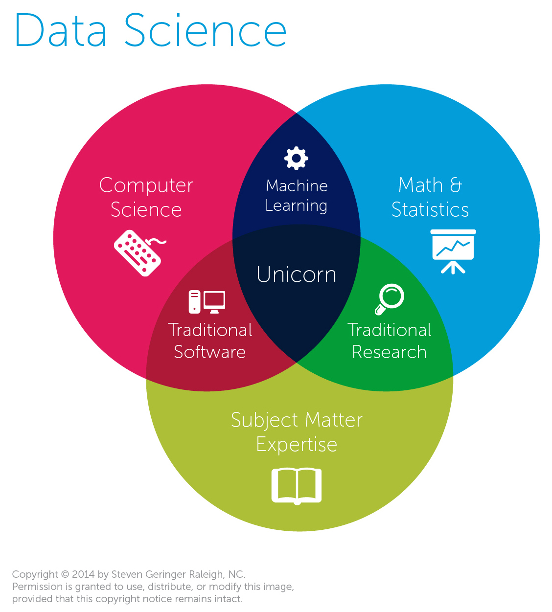
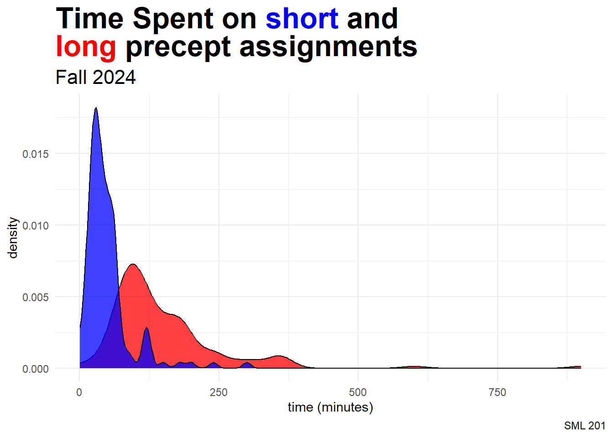
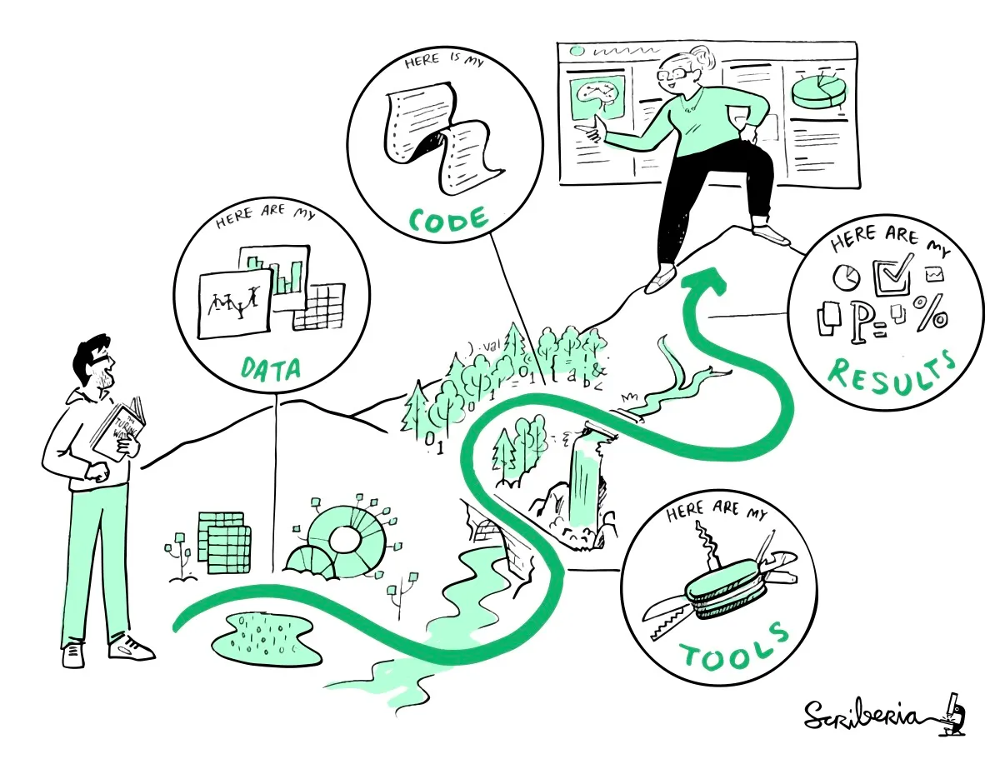
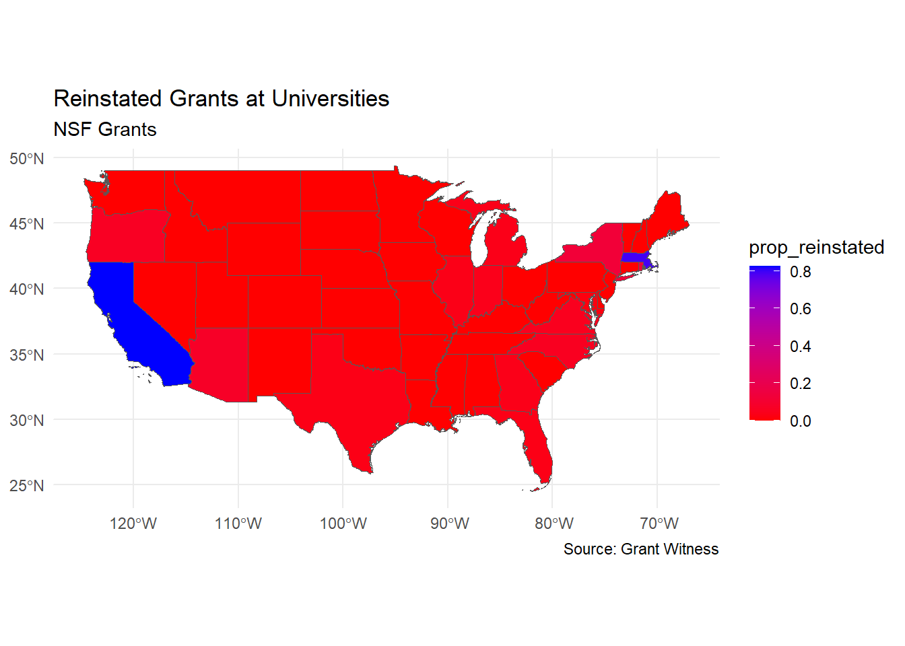
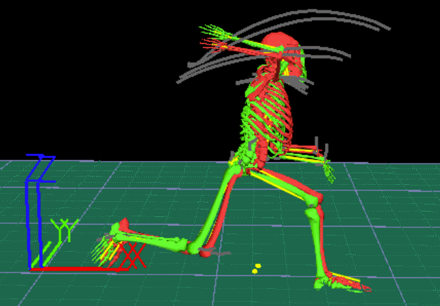

library("ggtext")
library("gt")
library("gtExtras")
library("sf")
library("tidytext")
library("tidyverse")
precept_df <- readr::read_csv("precept_workload.csv")
topics_df <- readr::read_csv("SML201_lecture_schedule.csv")1: Introduction
Learning Objectives
Goal: Introduce data science
Objective: Explore a data set with bar graphs and facets

Packages
Case Study: Grant Witness
I wanted to explore the data sets assembled by Grant Witness (Noam Ross, et al). This data is about terminations of research grants in the USA in the year 2025.
The data can be downloaded as 3 CSV files
epa_terminations.csvnih_terminations.csvnsf_terminations.csv
which refer to the EPA (Environmental Protection Agency), NIH (National Institutes of Health), and NSF (National Science Foundation) respectively.
banned_words <- readLines("data/banned_words.txt")
EPA_raw <- readr::read_csv("data/epa_terminations.csv")
NIH_raw <- readr::read_csv("data/nih_terminations.csv")
NSF_raw <- readr::read_csv("data/nsf_terminations.csv")
states_shp <- readr::read_rds("data/us_states_shp.rds")
stop_words <- tidytext::get_stopwords()Data Wrangling
colnames(EPA_raw) [1] "grant_id" "status"
[3] "event_history" "termination_date"
[5] "termination_indicator" "reinstatement_date"
[7] "reinstatement_indicator" "project_title"
[9] "organization" "start_date"
[11] "original_end_date" "award_value"
[13] "award_outlaid" "award_frozen"
[15] "award_remaining" "notes"
[17] "org_state" "org_city"
[19] "org_county" "org_zip"
[21] "project_description" "org_type"
[23] "award_region" "gs_org"
[25] "cfda_number" "cfda_title"
[27] "funding_opportunity_number" "funding_opportunity_goals"
[29] "usaspending_url" "nggs_url" colnames(NIH_raw) [1] "status" "core_award_number"
[3] "full_award_number" "hhs_web_reported"
[5] "hhs_pdf_reported" "self_reported"
[7] "court_reported" "source_reported"
[9] "targeted_start_date" "targeted_end_date"
[11] "ever_frozen" "frozen_date"
[13] "unfrozen_date" "file_c_outlays"
[15] "termination_date" "cancellation_source"
[17] "reinstatement_indicator" "reinstated_est_date"
[19] "reinstatement_case" "last_payment_month"
[21] "last_payment_date" "project_title"
[23] "activity_code" "org_name"
[25] "org_type" "dept_type"
[27] "program_office" "org_state"
[29] "org_city" "org_congdist"
[31] "us_rep" "us_rep_phone"
[33] "flagged_words" "study_section"
[35] "foa" "foa_title"
[37] "abstract_text" "phr_text"
[39] "terms" "total_award"
[41] "total_estimated_outlays" "total_estimated_remaining"
[43] "spending_categories" "notes"
[45] "org_traits" "pct_ugrad_pellgrant"
[47] "pct_ugrad_fedloan" "appl_id"
[49] "prog_office_code" "funding_category"
[51] "nih_activity" "court_restoration_url"
[53] "usaspending_url" "taggs_url"
[55] "reporter_url" "record_sha1" colnames(NSF_raw) [1] "grant_id" "status"
[3] "terminated" "suspended"
[5] "termination_date" "termination_indicator"
[7] "reinstated" "reinstatement_date"
[9] "reinstatement_indicator" "cruz_list"
[11] "nsf_url" "usaspending_url"
[13] "project_title" "abstract"
[15] "org_name" "org_state"
[17] "org_city" "award_type"
[19] "usasp_start_date" "usasp_end_date"
[21] "nsf_start_date" "nsf_end_date"
[23] "nsf_program_name" "nsf_primary_program"
[25] "usasp_nsf_office" "nsf_total_budget"
[27] "nsf_obligated" "usasp_total_obligated"
[29] "usasp_obligation_hist" "usasp_total_obligated_corrected"
[31] "usasp_outlaid" "estimated_budget"
[33] "estimated_outlays" "estimated_remaining"
[35] "post_termination_deobligation" "division"
[37] "directorate" "div"
[39] "dir" "record_sha1" banned_words_df <- as.data.frame(banned_words)
banned_words_df <- banned_words_df |>
mutate(banned_words = stringr::str_trim(banned_words),
n_char = nchar(banned_words)) |>
filter(n_char > 0) |>
mutate(banned_words = stringr::str_to_lower(banned_words))
banned_words <- banned_words_df |>
pull(banned_words)print(banned_words_df$banned_words) [1] "activism" "activists" "advocacy"
[4] "advocate" "barrier" "barriers"
[7] "biased" "bias" "bipoc"
[10] "black and latinx" "community diversity" "community equity"
[13] "cultural differences" "cultural heritage" "culturally responsive"
[16] "disabilities" "discrimination" "discriminatory"
[19] "backgrounds" "groups" "diversified"
[22] "diversify" "enhancing" "equal opportunity"
[25] "equality" "equitable" "ethnicity"
[28] "excluded" "female" "fostering"
[31] "gender" "hate speech" "hispanic minority"
[34] "historically" "implicit bias" "inclusion"
[37] "inclusive" "increase" "indigenous community"
[40] "inequalities" "inequities" "institutional"
[43] "lgbtq" "marginalize" "minorities"
[46] "multicultural" "polarization" "political"
[49] "prejudice" "privileges" "promoting"
[52] "race" "racial" "justice"
[55] "sense of belonging" "sexual preferences" "social justice"
[58] "sociocultural" "socioeconomic" "status"
[61] "stereotypes" "systemic" "trauma"
[64] "underappreciated" "underrepresented" "underserved"
[67] "victim" "women" intersect(colnames(NIH_raw), colnames(NSF_raw))[1] "status" "termination_date"
[3] "reinstatement_indicator" "project_title"
[5] "org_name" "org_state"
[7] "org_city" "usaspending_url"
[9] "record_sha1" For now, I am going to focus on the NIH and NSF data since their tables are more similar. It appears that the column names are not uniform, so let’s search for columns of interest.
NoteSubset
I then looked at the spreadsheets directly.
intersect_columns <- intersect(colnames(NIH_raw), colnames(NSF_raw))
df_NIH <- NIH_raw |>
select(all_of(intersect_columns), abstract_text, total_award, dept_type)
df_NSF <- NSF_raw |>
select(all_of(intersect_columns), abstract, nsf_total_budget, nsf_program_name)
common_columns <- c("status", "termination_date", "reinstatement_ind", "project_title", "org_name", "org_state", "org_city", "usaspending_url", "record_sha1", "abstract", "budget", "subdivsion")
colnames(df_NIH) <- common_columns
colnames(df_NSF) <- common_columns
df_NIH <- df_NIH |> mutate(agency = "NIH")
df_NSF <- df_NSF |> mutate(agency = "NSF")
df <- rbind(df_NIH, df_NSF) |>
mutate(org_name = stringr::str_to_title(org_name))Princeton Impact
My audience will want to know about the grants that directly relate to Princeton University. Here, I simply look at the org_name variable (i.e. this approach may miss grants with collaborators across multiple universities).
Table
| Terminated Grants at Princeton University | ||||
| NIH and NSF Grants | ||||
| agency | org_city | termination_date | budget | project_title |
|---|---|---|---|---|
| NIH | Princeton | 2025-03-12 | $148,460.00 | The psychological underpinnings of gender disparities in adolescent mental health |
| NIH | Princeton | 2025-03-12 | $247,610.00 | Circuit Reconstruction of Functionally-Identified Neurons in Deep Brain Regions: Application to Grid Cells |
| NIH | Princeton | 2025-03-12 | $250,000.00 | Building Dendrite Architecture via Microtubule Nucleation |
| NIH | Princeton | 2025-03-12 | $271,978.00 | Mapping Neural Dynamics in Hormone-sensitive Networks |
| NIH | Princeton | 2025-03-12 | $1,331,240.19 | Views of Gender in Adolescence |
| NIH | Princeton | 2025-04-02 | $35,974.00 | The Role of the Adaptor Protein Enkurin in Left-Right Patterning- a Promising Link Between Polycystin-2 and Calcium Signaling |
| NIH | Princeton | 2025-05-16 | $32,974.00 | Delineating the impact of human karyopherins on hepatitis B virus species tropism |
| NSF | PRINCETON | 2025-05-22 | $61,560.00 | Collaborative Research: HCC: Designing Technologies for Marginalized Communities |
| NSF | PRINCETON | 2025-05-22 | $414,688.00 | Daily Watcher Tracking Survey and Monitoring the Effects of War on Public Opinion |
| NSF | PRINCETON | 2025-05-22 | $74,948.00 | RCN-UBE Incubator: Project Leadership - Embedding Inclusive Leadership Experiences in the STEM Classroom |
| NSF | PRINCETON | 2025-05-22 | $400,000.00 | Conference: Support for Conferences and Mentoring of Women |
| NIH | Princeton | 2025-06-05 | $1,015,148.00 | Hyster (Rivas-Souchet) Diversity Supplement |
| Source: Grant Witness | ||||
df_Princeton <- df |>
filter(stringr::str_detect(org_name, "Princeton")) |>
tidyr::fill(termination_date, .direction = "down")
df_Princeton |>
select(agency, org_city, termination_date, budget, project_title) |>
arrange(termination_date) |>
gt() |>
cols_align(align = "center") |>
fmt_currency(columns = "budget", currency = "USD") |>
tab_footnote(footnote = "Source: Grant Witness") |>
tab_header(
title = "Terminated Grants at Princeton University",
subtitle = "NIH and NSF Grants"
) |>
tab_style(
style = cell_text(weight = "bold"),
locations = cells_column_labels()
) |>
tab_style(
style = list(cell_fill(color = "#E77500"),
cell_text(color = "#121212",
weight = "bold")),
locations = cells_body(columns = "org_city")
)Presenter
Spring 2026
Tuesdays and Thursdays
- 1040 AM to 12 noon: Architecture Building 101
- 120 PM to 240 PM: Friend 006
Lecturer: Derek
- I go by “Derek” or “teacher”
TipCourse Description
Introduction to Data Science provides a practical introduction to the burgeoning field of data science. The course introduces students to the essential tools for conducting data-driven research, including the fundamentals of programming techniques and the essentials of statistics. Students will work with real-world datasets from various domains; write computer code to manipulate, explore, and analyze data; use basic techniques from statistics and machine learning to analyze data; learn to draw conclusions using sound statistical reasoning; and produce scientific reports. No prior knowledge of programming or statistics is required.
Lecturer

Current Research in Pedagogy

- active learning
- computer programming
- flipped classrooms
Identity Statement
- Originally from Los Angeles
- Math: easier to understand through graphs
- Computer Programming: years of experience with R, Python, MATLAB, PHP, HTML, etc.
- Learning: drawn to puzzles and manageable tasks
- Personality: shy, introvert

Icebreaker
name
major (and minors or certificates if applicable)
unusual goal
- (please pick a goal other than “get good grades”)
- whatever time frame makes sense
TipDerek’s Example
“Hi. My name is Derek, and I majored in applied mathematics. My unusual goal is that I am trying to learn a bit of the Polish language.
WarningDCP1
Assessment
NotePrecepts
10 percent of semester grade
weekly programming problem sets
assessment: either
- ask precept instructor to check your work for completion, XOR
- turn in work in Canvas (not both)
students are encouraged to work in pairs
NoteReading
- 4 percent of semester grade
- short reading tasks, cognitive activities
ImportantProjects
24 percent of semester grade
- (4%) exploratory data analyses, due February 24
- (8%) regression modeling, due April 7
- (12%) inference and machine learning, due May 11
Students may work in groups of 1, 2, or 3 people
ImportantExams
50 percent of semester grade
- Exam 1 (20%): March 5
- Exam 2 (30%): April 23
content:
- multiple-choice questions (similar to study materials)
- open-ended tasks (similar to precepts and projects)
TipLogistics
- 2 percent of semester grade
- short surveys, group formation, Derek’s research, etc.
Reading List
Textbooks

This course will loosely follow
- R for Data Science by Hadley Wickham, Mine Cetinkaya-Rundel, and Garrett Grolemund (online textbook)
- Statistical Inference via Data Science by Chester Ismay and Albert Y Kim (online textbook)

Additional Reading
The following list of books is optional for student studies, but the instructor may use some materials to add depth and interest to the course.
TipAdditional Reading
- The Seven Pillars of Statistical Wisdom by Stephen M Stigler provides a wonderful overview of the history of statistics and the field’s major developments.
- Statistical Rethinking by Richard McElreath is the premier body of work in the field of Bayesian analysis. This resource is great for people who want to build a strong foundation in philosophy and theory in this branch of mathematics.
- Teaching Statistics by Andrew Gelman and Deborah Nolan features a variety of classroom activities that engage audiences at prestigious universities into learning statistical concepts.
- Bernoulli’s Fallacy by Aubrey Clayton is a scathing review of the history of statistics and posits that the foundations of the field are flawed.
Other Affected Universities
Here, we perform some segmentation and pivoting to find the top 10 organizations that were affected by the terminated grants (for both NIH and NSF grants)
NIH
| Terminated Grants at Universities | ||
| NIH Grants, top 10 organizations affected | ||
| agency | org_name | num_grants |
|---|---|---|
| NIH | Columbia University Health Sciences | 956 |
| NIH | Northwestern University At Chicago | 623 |
| NIH | University Of California Los Angeles | 519 |
| NIH | Harvard Medical School | 352 |
| NIH | Brown University | 244 |
| NIH | Cornell University | 189 |
| NIH | Duke University | 185 |
| NIH | Harvard University D/B/A Harvard School Of Public Health | 162 |
| NIH | Harvard University | 144 |
| NIH | University Of California, San Francisco | 131 |
| Source: Grant Witness | ||
df |>
filter(agency == "NIH") |>
group_by(org_name) |>
mutate(num_grants = n()) |>
ungroup() |>
select(agency, org_name, num_grants) |>
distinct() |>
slice_max(n = 10, order_by = num_grants) |>
gt() |>
cols_align(align = "center") |>
tab_footnote(footnote = "Source: Grant Witness") |>
tab_header(
title = "Terminated Grants at Universities",
subtitle = "NIH Grants, top 10 organizations affected"
) |>
tab_style(
style = cell_text(weight = "bold"),
locations = cells_column_labels()
) |>
tab_style(
style = list(cell_fill(color = "springgreen"),
cell_text(color = "#121212",
weight = "bold")),
locations = cells_body(columns = "org_name")
)NSF
| Terminated Grants at Universities | ||
| NSF Grants, top 10 organizations affected | ||
| agency | org_name | num_grants |
|---|---|---|
| NSF | University Of California-Los Angeles | 306 |
| NSF | Harvard University | 200 |
| NSF | Arizona State University | 28 |
| NSF | Regents Of The University Of Michigan - Ann Arbor | 28 |
| NSF | University Of Colorado At Boulder | 24 |
| NSF | Michigan State University | 18 |
| NSF | University Of Washington | 17 |
| NSF | Florida International University | 17 |
| NSF | University Of Texas At Austin | 16 |
| NSF | University Of Wisconsin-Madison | 16 |
| Source: Grant Witness | ||
df |>
filter(agency == "NSF") |>
group_by(org_name) |>
mutate(num_grants = n()) |>
ungroup() |>
select(agency, org_name, num_grants) |>
distinct() |>
slice_max(n = 10, order_by = num_grants) |>
gt() |>
cols_align(align = "center") |>
tab_footnote(footnote = "Source: Grant Witness") |>
tab_header(
title = "Terminated Grants at Universities",
subtitle = "NSF Grants, top 10 organizations affected"
) |>
tab_style(
style = cell_text(weight = "bold"),
locations = cells_column_labels()
) |>
tab_style(
style = list(cell_fill(color = "cadetblue1"),
cell_text(color = "#121212",
weight = "bold")),
locations = cells_body(columns = "org_name")
)Geospatial
For science communication (“sci comm”), we now join tabular and spatial data in hopes of producing geometry maps to explore the information.
df_state_group <- df |>
group_by(agency, org_state) |>
mutate(num_grants = n()) |>
ungroup() |>
select(agency, org_state, num_grants) |>
distinct()
df_state_group$num_grants <- as.numeric(df_state_group$num_grants)
shp_and_df <- states_shp |>
left_join(df_state_group, by = join_by(STUSPS == org_state))
shp_and_df |>
filter(agency == "NIH") |>
ggplot() +
geom_sf(aes(fill = log(num_grants))) +
labs(title = "Terminated Grants at Universities",
subtitle = "NIH Grants",
caption = "Source: Grant Witness") +
scale_fill_gradient(low = "red", high = "blue") +
theme_minimal()
shp_and_df |>
filter(agency == "NSF") |>
ggplot() +
geom_sf(aes(fill = log(num_grants))) +
labs(title = "Terminated Grants at Universities",
subtitle = "NSF Grants",
caption = "Source: Grant Witness") +
scale_fill_gradient(low = "red", high = "blue") +
theme_minimal()Words
Titles
| Terminated NIH Grants | |
| Most Frequent Words in Titles | |
| word | n |
|---|---|
| health | 518 |
| research | 404 |
| mechanisms | 364 |
| disease | 358 |
| role | 346 |
| cell | 335 |
| program | 283 |
| hiv | 280 |
| training | 272 |
| cancer | 265 |
| Source: Grant Witness | |
| Terminated NIH Grants | |
| Most Frequent Words in Titles | |
| word | n |
|---|---|
| among | 260 |
| regulation | 229 |
| development | 224 |
| risk | 207 |
| care | 187 |
| function | 182 |
| university | 181 |
| use | 172 |
| human | 168 |
| brain | 165 |
| Source: Grant Witness | |
NIH_title_words <- df |>
filter(agency == "NIH") |>
select(project_title) |>
tidytext::unnest_tokens(word, project_title) |>
count(word) |>
anti_join(stop_words, by = "word")
tab1 <- NIH_title_words |>
arrange(desc(n)) |>
slice(1:10) |>
gt() |>
cols_align(align = "center") |>
tab_footnote(footnote = "Source: Grant Witness") |>
tab_header(
title = "Terminated NIH Grants",
subtitle = "Most Frequent Words in Titles"
) |>
tab_style(
style = cell_text(weight = "bold"),
locations = cells_column_labels()
) |>
tab_style(
style = list(cell_fill(color = "springgreen"),
cell_text(color = "#121212",
weight = "bold")),
locations = cells_body(columns = "word")
)
tab2 <- NIH_title_words |>
arrange(desc(n)) |>
slice(11:20) |>
gt() |>
cols_align(align = "center") |>
tab_footnote(footnote = "Source: Grant Witness") |>
tab_header(
title = "Terminated NIH Grants",
subtitle = "Most Frequent Words in Titles"
) |>
tab_style(
style = cell_text(weight = "bold"),
locations = cells_column_labels()
) |>
tab_style(
style = list(cell_fill(color = "springgreen"),
cell_text(color = "#121212",
weight = "bold")),
locations = cells_body(columns = "word")
)
list(tab1, tab2) |>
gtExtras::gt_two_column_layout()| Terminated NSF Grants | |
| Most Frequent Words in Titles | |
| word | n |
|---|---|
| research | 845 |
| collaborative | 632 |
| stem | 405 |
| career | 211 |
| equity | 200 |
| learning | 177 |
| alliance | 149 |
| engineering | 145 |
| science | 142 |
| education | 141 |
| Source: Grant Witness | |
| Terminated NSF Grants | |
| Most Frequent Words in Titles | |
| word | n |
|---|---|
| faculty | 129 |
| students | 119 |
| community | 113 |
| advance | 107 |
| inclusive | 97 |
| based | 89 |
| participation | 83 |
| project | 82 |
| black | 78 |
| change | 78 |
| Source: Grant Witness | |
NSF_title_words <- df |>
filter(agency == "NSF") |>
select(project_title) |>
tidytext::unnest_tokens(word, project_title) |>
count(word) |>
anti_join(stop_words, by = "word")
tab1 <- NSF_title_words |>
arrange(desc(n)) |>
slice(1:10) |>
gt() |>
cols_align(align = "center") |>
tab_footnote(footnote = "Source: Grant Witness") |>
tab_header(
title = "Terminated NSF Grants",
subtitle = "Most Frequent Words in Titles"
) |>
tab_style(
style = cell_text(weight = "bold"),
locations = cells_column_labels()
) |>
tab_style(
style = list(cell_fill(color = "springgreen"),
cell_text(color = "#121212",
weight = "bold")),
locations = cells_body(columns = "word")
)
tab2 <- NSF_title_words |>
arrange(desc(n)) |>
slice(11:20) |>
gt() |>
cols_align(align = "center") |>
tab_footnote(footnote = "Source: Grant Witness") |>
tab_header(
title = "Terminated NSF Grants",
subtitle = "Most Frequent Words in Titles"
) |>
tab_style(
style = cell_text(weight = "bold"),
locations = cells_column_labels()
) |>
tab_style(
style = list(cell_fill(color = "springgreen"),
cell_text(color = "#121212",
weight = "bold")),
locations = cells_body(columns = "word")
)
list(tab1, tab2) |>
gtExtras::gt_two_column_layout()Abstracts
| Terminated NIH Grants | |
| Most Frequent Words in Abstracts | |
| word | n |
|---|---|
| research | 11899 |
| health | 8300 |
| aim | 7305 |
| 1 | 6698 |
| 2 | 6580 |
| cell | 6488 |
| project | 6216 |
| data | 5630 |
| cells | 5325 |
| program | 4970 |
| Source: Grant Witness | |
| Terminated NIH Grants | |
| Most Frequent Words in Abstracts | |
| word | n |
|---|---|
| use | 4892 |
| training | 4850 |
| development | 4716 |
| study | 4487 |
| 3 | 4419 |
| specific | 4396 |
| disease | 4239 |
| new | 4052 |
| can | 4040 |
| studies | 3962 |
| Source: Grant Witness | |
NIH_abstract_words <- df |>
filter(agency == "NIH") |>
select(abstract) |>
tidytext::unnest_tokens(word, abstract) |>
count(word) |>
anti_join(stop_words, by = "word")
tab1 <- NIH_abstract_words |>
arrange(desc(n)) |>
slice(1:10) |>
gt() |>
cols_align(align = "center") |>
tab_footnote(footnote = "Source: Grant Witness") |>
tab_header(
title = "Terminated NIH Grants",
subtitle = "Most Frequent Words in Abstracts"
) |>
tab_style(
style = cell_text(weight = "bold"),
locations = cells_column_labels()
) |>
tab_style(
style = list(cell_fill(color = "springgreen"),
cell_text(color = "#121212",
weight = "bold")),
locations = cells_body(columns = "word")
)
tab2 <- NIH_abstract_words |>
arrange(desc(n)) |>
slice(11:20) |>
gt() |>
cols_align(align = "center") |>
tab_footnote(footnote = "Source: Grant Witness") |>
tab_header(
title = "Terminated NIH Grants",
subtitle = "Most Frequent Words in Abstracts"
) |>
tab_style(
style = cell_text(weight = "bold"),
locations = cells_column_labels()
) |>
tab_style(
style = list(cell_fill(color = "springgreen"),
cell_text(color = "#121212",
weight = "bold")),
locations = cells_body(columns = "word")
)
list(tab1, tab2) |>
gtExtras::gt_two_column_layout()| Terminated NSF Grants | |
| Most Frequent Words in Abstracts | |
| word | n |
|---|---|
| project | 7422 |
| stem | 7149 |
| research | 7055 |
| students | 5050 |
| support | 3859 |
| education | 2928 |
| program | 2880 |
| science | 2846 |
| using | 2778 |
| learning | 2625 |
| Source: Grant Witness | |
| Terminated NSF Grants | |
| Most Frequent Words in Abstracts | |
| word | n |
|---|---|
| faculty | 2549 |
| impacts | 2512 |
| data | 2507 |
| evaluation | 2419 |
| broader | 2374 |
| award | 2359 |
| engineering | 2357 |
| development | 2208 |
| community | 2174 |
| nsf's | 2102 |
| Source: Grant Witness | |
NSF_abstract_words <- df |>
filter(agency == "NSF") |>
select(abstract) |>
tidytext::unnest_tokens(word, abstract) |>
count(word) |>
anti_join(stop_words, by = "word")
tab1 <- NSF_abstract_words |>
arrange(desc(n)) |>
slice(1:10) |>
gt() |>
cols_align(align = "center") |>
tab_footnote(footnote = "Source: Grant Witness") |>
tab_header(
title = "Terminated NSF Grants",
subtitle = "Most Frequent Words in Abstracts"
) |>
tab_style(
style = cell_text(weight = "bold"),
locations = cells_column_labels()
) |>
tab_style(
style = list(cell_fill(color = "springgreen"),
cell_text(color = "#121212",
weight = "bold")),
locations = cells_body(columns = "word")
)
tab2 <- NSF_abstract_words |>
arrange(desc(n)) |>
slice(11:20) |>
gt() |>
cols_align(align = "center") |>
tab_footnote(footnote = "Source: Grant Witness") |>
tab_header(
title = "Terminated NSF Grants",
subtitle = "Most Frequent Words in Abstracts"
) |>
tab_style(
style = cell_text(weight = "bold"),
locations = cells_column_labels()
) |>
tab_style(
style = list(cell_fill(color = "springgreen"),
cell_text(color = "#121212",
weight = "bold")),
locations = cells_body(columns = "word")
)
list(tab1, tab2) |>
gtExtras::gt_two_column_layout()Word Clouds
While there are programmatic ways to make word clouds, I like the functionality of the WordClouds.com website. To use that third-party software, make a CSV file whose columns are: weight, word, color, url.
NIH_wordcloud_df <- NIH_abstract_words |>
mutate(weight = n, .before = "word") |>
select(weight, word) |>
arrange(desc(weight)) |>
slice(1:100) |>
mutate(color = ifelse(word %in% banned_words, "#ff0000", ""),
url = "")
readr::write_csv(NIH_wordcloud_df, "NIH_for_wordcloud.csv")
NSF_wordcloud_df <- NSF_abstract_words |>
mutate(weight = n, .before = "word") |>
select(weight, word) |>
arrange(desc(weight)) |>
slice(1:100) |>
mutate(color = ifelse(word %in% banned_words, "#ff0000", ""),
url = "")
readr::write_csv(NSF_wordcloud_df, "NSF_for_wordcloud.csv")Administrative
WarningPrerequisites
Minimal prerequisites:
- computer skills: organizing files, file types
- math: algebraic inequalities, familiarity with calculus, Boolean logic
NoteCourse Learning Outcomes
By the end of this course, students will be able to:
- Implement data science and statistical concepts and methods to data sets and real-world scenarios
- Utilize software to load files, perform data wrangling, and produce visualizations
- Compute results from data analyses and express the findings to academic and scientific communication audiences
- Discuss ethical and societal impact of data science projects and equitable practices
NoteLecture Sessions
Please keep extra noise to a minimum. Cell phones may be used as long as they are on silent or vibrate. Please also review the Cooperative Classroom statement below.
NotePrecepts
Precepts will be held for 80 minutes per week. Students will develop problem-solving skills through collaborative work on the computer programming while also working toward the projects.
NoteComputers
Use of a laptop computer is highly recommended for this course, and students are asked to bring their laptop computer to every lecture and precept session.
- More information about computer needs can be found at https://princeton.service-now.com/service?id=kb_article&sys_id=KB0013768
- While Chromebooks (or other systems that discourage installation of software) can access cloud software, intensive calculations in this course may merit the use of a personal computer and downloaded software rather than server access.
TipSpecial Accommodations
Students must register with the Office of Disability Services (ODS) (ods@princeton.edu; 258-8840) for disability verification and determination of eligibility for reasonable academic accommodations. Requests for academic accommodations for this course need to be made at the beginning of the semester, or as soon as possible for newly approved students, and again at least two weeks in advance of any needed accommodations in order to make arrangements to implement the accommodations. Please make an appointment to meet with me in order to maintain confidentiality in addressing your needs. No accommodations will be given without authorization from ODS, or without advance notice.
ImportantAcademic Integrity Policy
You are allowed to read text books and resources online. You may not ask other individuals questions (e.g., you may not ask questions on Stack Exchange or R help discussion groups). In accordance with the honor code, you must cite all sources of external information used in your work. This can be a book or a web site. Part of being a successful data scientist is having the ability to leverage existing information and techniques, so it is okay to do so in this course as long as you cite the reference. University policies can be reviewed at https://ua.princeton.edu/policies-resources/undergraduate-honor-system
Data-Driven Course
Audience
During the Fall 2024 semester, the Demographics Survey yielded the following information about majors and minors.


df_major <- readr::read_csv("majors_minors_Fall_2024.csv")
df_minor <- data.frame(c(df_major$minor1, df_major$minor2))
colnames(df_minor) <- "minor"
df_minor <- df_minor |> filter(!is.na(minor))
df_major |>
ggplot(aes(y = fct_rev(fct_infreq(major)))) +
geom_bar(color = "#000000", fill = "#EE7F2D", stat = "count") +
labs(title = "Student Majors for SML 201",
subtitle = "Fall 2024 semester",
caption = "SML 201",
x = "count", y = "") +
theme_minimal()
df_minor |>
group_by(minor) |>
mutate(n = n()) |>
ungroup() |>
filter(n > 1) |>
ggplot(aes(y = fct_rev(fct_infreq(minor)))) +
geom_bar(color = "#000000", fill = "#EE7F2D", stat = "count") +
labs(title = "Student Minors for SML 201",
subtitle = "Fall 2024 semester",
caption = "SML 201\n
subgroups with n > 1",
x = "count", y = "") +
theme_minimal()Workload
As part of an exit-survey, I asked students how long (in minutes) they spent on the “shortest” and “longest” precept assignments.
summary(precept_df$short) Min. 1st Qu. Median Mean 3rd Qu. Max.
1.00 30.00 40.00 49.76 60.00 300.00 summary(precept_df$long) Min. 1st Qu. Median Mean 3rd Qu. Max.
1.5 90.0 120.0 150.9 180.0 900.0 
precept_long <- precept_df |>
pivot_longer(cols = c("short", "long"), names_to = "contrast", values_to = "time")
title_string <- "Time Spent on <span style = 'color:#0000FF'>short</span> and<br><span style = 'color:#FF0000'>long</span> precept assignments"
precept_long |>
ggplot() +
geom_density(aes(x = time, fill = contrast),
alpha = 0.75) +
labs(title = title_string,
subtitle = "Fall 2024",
caption = "SML 201",
x = "time (minutes)") +
scale_fill_manual(values = c("red", "blue")) +
theme_minimal() +
theme(legend.position = "none",
plot.title = element_markdown(face = "bold", size = 24),
plot.subtitle = element_markdown(size = 16))
WarningDCP2

better example by Nicola Rennie
Learning Environment
Cooperative Classroom
Learning in a cooperative environment should be stimulating, demanding, and fair. Because this approach to learning is different from the competitive classroom structure that many other courses used to be based on, it is important for us to be clear about mutual expectations. Below are my expectations for students in this class. This set of expectations is intended to maximize debate and exchange of ideas in an atmosphere of mutual respect while preserving individual ownership of ideas and written words. If you feel you do not understand or cannot agree to these expectations, you should discuss this with your instructor and classmates.
- Students are expected to work cooperatively with other members of the class and show respect for the ideas and contributions of other people.
- When working as part of a group, students should strive to be good contributors to the group, listen to others, not dominate, and recognize the contributions of others. Students should try to ensure that everyone in the group is welcome to contribute and recognize that everyone contributes in different ways to a group process.
- Students should explore data, make observations, and develop inferences as part of a group. If you use material from published sources, you must provide appropriate attribution.
This document has been adapted from Scientific Teaching by Jo Handelsman, Sarah Miller, and Christine Pfund

Pep Talk
Learning R can be difficult at first—it is like learning a new language, just like Spanish, French, or Chinese. Hadley Wickham—the chief data scientist at RStudio and the author of some amazing R packages you will be using like ggplot2—made this wise observation:
TipWisdom from Hadley Wickham
It’s easy when you start out programming to get really frustrated and think, “Oh it’s me, I’m really stupid,” or, “I’m not made out to program.” But, that is absolutely not the case. Everyone gets frustrated. I still get frustrated occasionally when writing R code. It’s just a natural part of programming. So, it happens to everyone and gets less and less over time. Don’t blame yourself. Just take a break, do something fun, and then come back and try again later.
If you are finding yourself taking way too long hitting your head against a wall and not understanding, take a break, talk to classmates, ask questions … e-mail [Derek], etc. I promise you can do this.
—Andrew Heiss, Georgia State University
Inclusion Statement
I value all students regardless of their background, country of origin, race, religion, ethnicity, gender, sexual orientation, disability status, etc. and am committed to providing a climate of excellence and inclusiveness within all aspects of the course. If there are aspects of your culture or identity that you would like to share with me as they relate to your success in this class, I am happy to meet to discuss. Likewise, if you have any concerns in this area or facing any special issues or challenges, you are encouraged to discuss the matter with me (set up a meeting by e-mail) with an assurance of full confidentiality (only exception being mandatory reporting of academic integrity code violations or sexual harassment).
Learner Profiles
Sharing an overview of the types of students that might be taking this course.
Spike

- Senior
- History
- Did not like computer programming in the past, but is willing to learn now
Jet

- Junior
- Psychology
- Took AP Statistics years ago, and wants more complex case studies
Faye

- Sophomore
- Anthropology
- Wants to add “data science” to CV before applying to internships
Ed

- Computer Science
- ORFE
- Has a lot of experience programming in Python, but is wondering why this class is taught in R
Languages
Why not Spreadsheets?
“Reproducibility refers to the ability of a researcher to duplicate the results of a prior study using the same materials and procedures as were used by the original investigator. So in an attempt to reproduce a published statistical analysis, a second researcher might use the same raw data to build the same analysis files and implement the same statistical analysis to determine whether they yield the same results.” — Harvard Data Management

- image source: Netherlands eScience Center
Why R?

- matches data science concepts well
- language made for statistics and probability calculations
- software compatibility
- easier to learn
- easier to teach
- gaining popularity in areas such as consulting, finance, epidemiology, genomics, pharmaceuticals, etc.
R vs Python
| Data Science Programming Languages | |
| Which one is better? | |
| R | Python |
|---|---|
| Data Science | Machine Learning |
| Dashboards | Software Development |
| Interactvity | Object-Oriented Programming |
| Visualization | Big Data |
| Debugging | Faster |
| source: Derek's opinion | |
languages_df <- data.frame(
R = c("Data Science", "Dashboards", "Interactvity", "Visualization", "Debugging"),
Python = c("Machine Learning", "Software Development", "Object-Oriented Programming", "Big Data", "Faster")
)
languages_df |>
gt() |>
cols_align(align = "center") |>
tab_footnote(footnote = "source: Derek's opinion") |>
tab_header(
title = "Data Science Programming Languages",
subtitle = "Which one is better?"
) |>
tab_style(
style = cell_text(weight = "bold"),
locations = cells_column_labels()
) |>
tab_style(
style = list(
cell_fill(color = "#ffc100")
),
locations = cells_body(columns = R)
) |>
tab_style(
style = list(
cell_fill(color = "#d0cef3")
),
locations = cells_body(columns = Python)
)Topics
| SML 201 | |||||||
| Lecture Topics | |||||||
| Week | Date | Topic | Data Science | Data Visualization | Machine Learning | Statistics | data set |
|---|---|---|---|---|---|---|---|
| 1 | 27-Jan | Introduction | variables | ggplot | training | observations | canceled grants |
| 1 | 29-Jan | Centrality | grouping | dotplot | sample mean | mean, median | Olympic athlete ages |
| 2 | 3-Feb | Variance | lists | histogram | optimize | SSE, sd | stock market |
| 2 | 5-Feb | Categories | factors | boxplot | filter | TP, FP, FN, TN | course demographics |
| 3 | 10-Feb | GeoSpatial | vectors | choropleth | joins | z-score, percentiles | New Jersey public health |
| 3 | 12-Feb | Correlation and Paradoxes | corplot | scatterplot | missing values | r | NA |
| 4 | 17-Feb | Linear Regression | lm | geom_smooth | summary() | parameters | NA |
| 4 | 19-Feb | Linear Regression | NA | NA | NA | R^2 | NA |
| 5 | 24-Feb | Logistic Regression | NA | NA | NA | NA | NA |
| 5 | 26-Feb | Discrete Distributions | NA | NA | NA | NA | NA |
| 6 | 3-Mar | Reporting | NA | NA | NA | NA | NA |
| 6 | 5-Mar | EXAM | NA | NA | NA | NA | NA |
| 7 | 17-Mar | Continuous Distributions | NA | NA | NA | NA | NA |
| 7 | 19-Mar | Estimators | NA | NA | NA | CLT | NA |
| 8 | 24-Mar | Confidence Intervals | NA | NA | NA | NA | NA |
| 8 | 26-Mar | Hypothesis Testing | NA | NA | NA | NA | NA |
| 9 | 31-Mar | Hypothesis Testing | NA | NA | NA | NA | NA |
| 9 | 2-Apr | ANOVA | NA | NA | NA | NA | NA |
| 10 | 7-Apr | Model Selection | NA | NA | NA | NA | NA |
| 10 | 9-Apr | Supervised Learning | NA | NA | NA | NA | NA |
| 11 | 14-Apr | TidyModels | NA | NA | NA | NA | NA |
| 11 | 16-Apr | Unsupervised Learning | NA | NA | NA | NA | NA |
| 12 | 21-Apr | eLLMer | NA | NA | NA | NA | NA |
| 12 | 23-Apr | EXAM | NA | NA | NA | NA | NA |
| Spring 2026 | |||||||
topics_df |>
select(1:8) |>
filter(!is.na(Week)) |>
gt() |>
cols_align(align = "center") |>
tab_footnote(footnote = "Spring 2026") |>
tab_header(
title = "SML 201",
subtitle = "Lecture Topics"
) |>
tab_style(
style = cell_text(weight = "bold"),
locations = cells_column_labels()
) |>
tab_style(
style = list(
cell_fill(color = "#ffc100")
),
locations = cells_body(columns = Topic)
)
WarningDCP3
NoteChanges
Between the Fall 2024 semesters and the Spring 2026 semester, Derek made adjustments to SML 201, including
removed “Networks” (too niche and provincial)
restoring “ANOVA” (classical statistics concept)
higher emphasis on exams; lower emphasis on projects
adding DCPs and Slido for interactivity
removed before-lecture quizzes (too many deadlines)
- moving to Practice Quizzes
- worth zero percent of semester grade (to remove deadlines)
adding data ethics and/or history to each session (CLO4)
Ethics: PII
Personally identifiable information (PII) could be used to specifically identify an individual.

- image source: UpGuard
NotePII in SML 201
Beyond your name and e-mail address (used for in-class communication), you are not obligated to release your personally identifiable information in this course.
Reinstatement
Conditional Statements
- If a grant was restored, as seen in the
reinstatement_indcolumn, setrestatedto TRUE - If a grant was not restored, as seen in the
reinstatement_indcolumn, setrestatedto FALSE R:mutate(reinstated = ifelse(is.na(reinstatement_ind), FALSE, TRUE))
| Reinstated NIH Grants | ||
| Tracking Missing Values | ||
| org_state | reinstatement_ind | reinstated |
|---|---|---|
| NY | Removed from TAGGS list | TRUE |
| DC | Removed from TAGGS list | TRUE |
| TN | NA | FALSE |
| IL | NA | FALSE |
| IL | NA | FALSE |
| MA | Termination removed from RePORTER | TRUE |
| MA | AAUP-Harvard v DOJ, Harvard v HHS | TRUE |
| RI | NA | FALSE |
| CA | MA v. RFK 2025-06-18 | TRUE |
| MA | AAUP-Harvard v DOJ, Harvard v HHS | TRUE |
| Source: Grant Witness, sample of grants | ||
df_NIH |>
select(org_state, reinstatement_ind) |>
filter(!is.na(org_state)) |>
slice(1:10) |>
mutate(reinstated = ifelse(is.na(reinstatement_ind), FALSE, TRUE)) |>
gt() |>
cols_align(align = "center") |>
tab_footnote(footnote = "Source: Grant Witness, sample of grants") |>
tab_header(
title = "Reinstated NIH Grants",
subtitle = "Tracking Missing Values"
) |>
tab_style(
style = cell_text(weight = "bold"),
locations = cells_column_labels()
) |>
tab_style(
style = list(
cell_fill(color = "cyan")
),
locations = cells_body(columns = c(reinstatement_ind, reinstated),
rows = reinstated == FALSE)
) |>
tab_style(
style = list(
cell_fill(color = "darkorange")
),
locations = cells_body(columns = c(reinstatement_ind, reinstated),
rows = reinstated == TRUE)
)Proportion
Finally, I am curious if some states performed better than others in getting those research grants reinstated. We will seek out the proportion of grants that were reinstated for each state.
df_state_group <- df |>
group_by(agency, org_state) |>
mutate(num_grants = n()) |>
ungroup() |>
mutate(reinstated = ifelse(is.na(reinstatement_ind), FALSE, TRUE)) |>
group_by(agency, org_state) |>
mutate(num_reinstated = sum(reinstated)) |>
ungroup() |>
mutate(prop_reinstated = num_reinstated / num_grants) |>
select(agency, org_state, prop_reinstated) |>
distinct()
shp_and_df <- states_shp |>
left_join(df_state_group, by = join_by(STUSPS == org_state))
shp_and_df |>
filter(agency == "NIH") |>
ggplot() +
geom_sf(aes(fill = prop_reinstated)) +
labs(title = "Reinstated Grants at Universities",
subtitle = "NIH Grants",
caption = "Source: Grant Witness") +
scale_fill_gradient(low = "red", high = "blue") +
theme_minimal()
shp_and_df |>
filter(agency == "NSF") |>
ggplot() +
geom_sf(aes(fill = prop_reinstated)) +
labs(title = "Reinstated Grants at Universities",
subtitle = "NSF Grants",
caption = "Source: Grant Witness") +
scale_fill_gradient(low = "red", high = "blue") +
theme_minimal()Projects
We will have hands-on coding experience here in SML 201.
Here are the projects being drafted for this semester.
Ornithology
Explore a taxonomic data set
- concepts: exploratory data analyses, sample statistics
- areas: biology, ecology
Created by
- Professor Çağan Şekercioğlu
- University of Utah

- image source: Çağan Şekercioğlu
Quantum Metal–Organic Framework
The Quantum Metal–Organic Framework (QMOF) database contains quantum-chemical properties for over 14,000 experimental MOF crystal structures, computed using periodic density functional theory calculations.
- concepts: linear regression modeling
- areas: chemical engineering
Created by
- Professor Andrew Rosen
- Princeton University

- image source: Computational Chemical Sciences (CCS) Initiative
OpenBiomechanics
The OpenBiomechanics Project is “The open source initiative for anonymized, elite-level athletic motion capture data”
- concepts: hypothesis testing, machine learning
- areas: physics, biophysics, physiology, kinesiology
Created by: Driveline Baseball

- image source: Driveline Baseball
Quo Vadimus?
Please read the weekly announcement in Canvas
Due this Friday:
- Software Installation
- Precept 1
- CLO Assessment
- Demographics Survey
Project 1:
- assigned: Feb 9
- due: Feb 24
Exam 1: Mar 5
TipSign-In
If you’re not enrolled yet, please sign-in (paper at the front of class)
Footnotes
Note(optional) Additional Resources and References
NoteSession Info
sessionInfo()R version 4.5.2 (2025-10-31 ucrt)
Platform: x86_64-w64-mingw32/x64
Running under: Windows 10 x64 (build 19045)
Matrix products: default
LAPACK version 3.12.1
locale:
[1] LC_COLLATE=English_United States.utf8
[2] LC_CTYPE=English_United States.utf8
[3] LC_MONETARY=English_United States.utf8
[4] LC_NUMERIC=C
[5] LC_TIME=English_United States.utf8
time zone: America/New_York
tzcode source: internal
attached base packages:
[1] stats graphics grDevices utils datasets methods base
other attached packages:
[1] lubridate_1.9.4 forcats_1.0.0 stringr_1.5.1 dplyr_1.1.4
[5] purrr_1.1.0 readr_2.1.5 tidyr_1.3.1 tibble_3.3.0
[9] ggplot2_4.0.0 tidyverse_2.0.0 tidytext_0.4.3 sf_1.0-21
[13] gtExtras_0.6.1 gt_1.0.0 ggtext_0.1.2
loaded via a namespace (and not attached):
[1] gtable_0.3.6 xfun_0.52 htmlwidgets_1.6.4 lattice_0.22-7
[5] paletteer_1.6.0 tzdb_0.5.0 vctrs_0.6.5 tools_4.5.2
[9] generics_0.1.4 parallel_4.5.2 proxy_0.4-27 janeaustenr_1.0.0
[13] pkgconfig_2.0.3 tokenizers_0.3.0 Matrix_1.7-4 KernSmooth_2.23-26
[17] RColorBrewer_1.1-3 S7_0.2.0 lifecycle_1.0.4 compiler_4.5.2
[21] farver_2.1.2 fontawesome_0.5.3 litedown_0.7 sass_0.4.10
[25] SnowballC_0.7.1 htmltools_0.5.8.1 class_7.3-23 yaml_2.3.10
[29] crayon_1.5.3 pillar_1.11.0 classInt_0.4-11 commonmark_2.0.0
[33] stopwords_2.3 tidyselect_1.2.1 digest_0.6.37 stringi_1.8.7
[37] rematch2_2.1.2 labeling_0.4.3 fastmap_1.2.0 grid_4.5.2
[41] cli_3.6.5 magrittr_2.0.3 e1071_1.7-16 withr_3.0.2
[45] scales_1.4.0 bit64_4.6.0-1 timechange_0.3.0 rmarkdown_2.29
[49] bit_4.6.0 hms_1.1.3 evaluate_1.0.4 knitr_1.50
[53] markdown_2.0 rlang_1.1.6 gridtext_0.1.5 Rcpp_1.1.0
[57] glue_1.8.0 DBI_1.2.3 xml2_1.3.8 vroom_1.6.5
[61] rstudioapi_0.17.1 jsonlite_2.0.0 R6_2.6.1 units_0.8-7